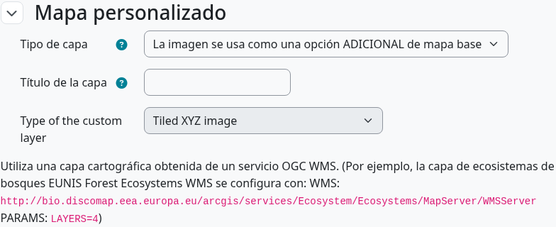

Elige un mapa
El editor estándar trabaja con OpenStreetMap y las capas configuradas en la actividad. Según el sitio, puedes utilizar teselas XYZ o servicios WMS, imágenes georreferenciadas subidas y capas superpuestas. Una imagen personalizada permite representar un museo o un juego sin geografía real; desactiva las herramientas geográficas cuando la imagen no tenga coordenadas terrestres.

Añade una fuente personalizada
- Abre los ajustes de la actividad y localiza las opciones de mapa o de capa personalizada.
- Elige el tipo de fuente. Para teselas XYZ introduce una URL con
{z},{x}y{y}. Para servicios TMS que cuentan Y desde abajo, utiliza la sintaxis de Y invertida si corresponde. - Para WMS indica la URL del servicio y el nombre de capa. Para una imagen subida proporciona el archivo y los límites geográficos o controles de colocación necesarios.
- Guarda, reabre el editor y verifica extensión, escala y atribución antes de dibujar etapas.

Dibuja las etapas
Selecciona camino y etapa, y activa el modo de dibujo. Un punto sirve para un objeto concreto; un polígono da tolerancia alrededor de un lugar. Con GPS al aire libre, crea polígonos suficientemente grandes para admitir el error del móvil y las condiciones del entorno. En modo edición arrastra vértices o añade uno sobre un segmento; guarda la geometría y revisa la validación.
Ayudas y zonas visibles
Según los ajustes de la actividad, las ayudas pueden revelar dirección, distancia o geometría. En el descubrimiento fuera de secuencia participan las etapas elegibles pendientes, y la orientación espacial apunta a la elegible más cercana. Prueba el mapa como estudiante para comprobar que las pistas no desvelan demasiado.
Lista de comprobación
- Cada etapa necesaria tiene al menos una geometría.
- Los caminos contienen al menos dos etapas con geometría.
- El mapa base carga en la zona y zoom previstos.
- La tolerancia GPS corresponde al entorno; hay QR donde el GPS falla.
- La imagen personalizada está colocada correctamente y puede reutilizarse legalmente.